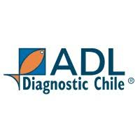

Puedes marcar varios tipos y varias opciones en cada filtro. Usa la búsqueda dentro del desplegable. Sin elegir = todos.
SDG / PVE / SCR / Cap. (sin Medio Ambiente ni I+D).
Participación del monto filtrado.
Falta OC/HES, listo para facturar, facturado, sin OC.
Programas dentro del filtro actual.
Nombre corto · monto en filtros activos.
Top 10 empresas apiladas por SDG/PVE/SCR…
Solo estado Falta OC/HES. Barras apiladas por mes · tabla pivote Cliente × Mes (todas las empresas del filtro).
Todas las empresas con pendiente · colores = mes
0 empresas · total —
Solo OC facturadas con ambas fechas (0–730 d). Rápido ≤30 · Normal 31–60 · Lento 61–90 · Crítico >90.
Según velocidad de facturación.
| Cliente | Docs | Prom. días | Mediana | P75 | Categoría | Monto |
|---|
0 filas (máx. 500). La columna Días solo aplica a facturadas del registro OC con ambas fechas; si no hay ciclo aparece "—".
| ID | Fecha | Periodo | Cliente | Tipo | Programa | Estado | Monto | Días |
|---|